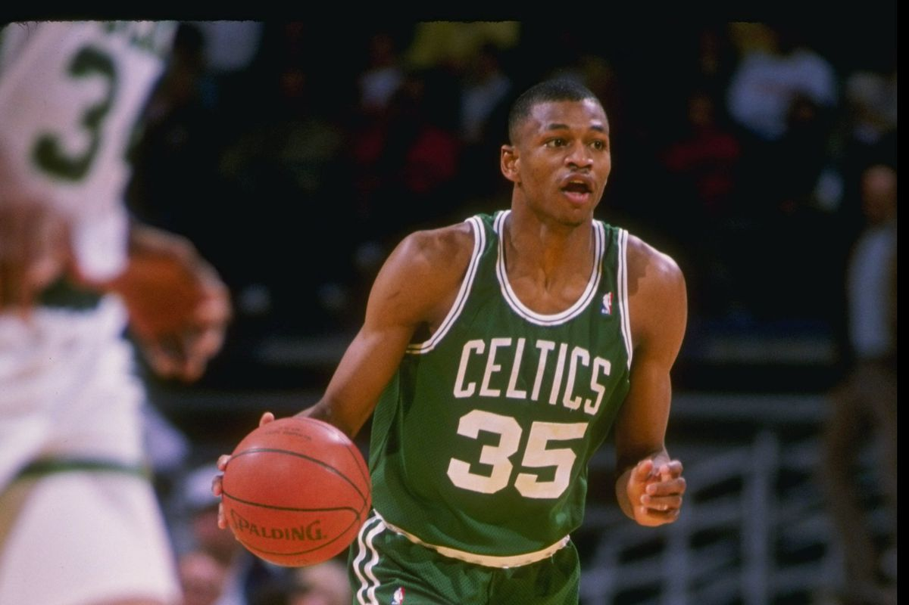

1946-50: Primeiros anos
No ano de 1946, o Boston Celtics foi fundado pelo então presidente da Boston Garden-Arena Corporation, Walter A. Brown. Em imediato, a equipe se filiou à Basketball Association of America (BAA). Mais tarde, veio à se tornar parte da National Basketball Association depois de uma fusão da BAA e da National Basketball League (NBL), dando origem à nova liga, no outono de 1949.
Em 1950, o Boston Celtics se tornou a primeira equipe da história a escolher um jogador afro-americano no Draft. Tratava-se de Chuck Cooper. atleta da West Virginia University.
1950-57: A chegada de Bob Cousy e Red Auerbach

Os primeiros anos do Boston Celtics na liga não foram fáceis. A equipe passou por algumas dificuldades, até a contratação do treinador Red Auerbach.
Nos primeiros dias da franquia, Auerbach não tinha assistentes. Conduzia todos os treinos. Era o olheiro - tanto dos adversários quanto dos atletas promissores - e planejava todas as viagens.
Um dos primeiros grandes jogadores a se juntar ao Celtics foi Bob Cousy, a quem Auerbach recusou inicialmente durante o draft. Cousy foi escolhido pelo St. Louis Hawks e pertencia ao Chicago Bulls até a falência da equipe de Illinois.
Após o fim da temporada da NBA de 1955-56, Auerbach fez uma assombrosa troca. Ele enviou Ed Macauley, grande estrela de seu elenco, e Cliff Hagan aos Hawks para obter Bob Cousy. Depois de uma negociação com o Rochester Royals, Auerbach conseguiu levar o pivô Bill Russell aos Celtics. Junto à dupla, a franquia de Massachusetts acertou com Tom Heinsohn, que mais tarde venceria o prêmio de calouro do ano. O trio trabalhou de forma extraordinária, e foi com eles que Auerbach construiu a base campeã por mais de uma década. Em função da disputa das Olímpiadas de Melbourne 1956, Russell demorou para se juntar ao time.
1957-69: A era Russell

Na temporada 1956-57, o Celtics disputava a sua primeira final da NBA. Os confrontos seriam contra o St. Louis Hawks, o mesmo que permitiu a aquisição de Russell aos alviverdes. Em uma série de sete jogos, o Celtics venceu o primeiro de seus 17 campeonatos que estavam por vir. Na temporada seguinte, o time de Auerbach avançou novamente para mais uma final. O adversário era o mesmo, que deu o troco em seis disputas. No entanto, a sequência de títulos chegaria após a aquisição de K. C. Jones. O Celtics deu início à uma dinastia que duraria mais de uma década.
Em 1959, com Cousy como armador, Russell como pivô e Heinsohn como ala, os Celtics venceram o campeonato da NBA depois de ganhar o St. Louis Hawks. Ainda treinado por Auerbach, o Celtics ganhou um recorde de oito campeonatos consecutivos. Durante esse período, os Celtics encontraram os Lakers nas finais por cinco vezes, começando uma intensa e amarga rivalidade que se estende por gerações. Os Celtics acabaria por encontrar o Lakers um total de 12 vezes nas finais da NBA.
Em 1964, Auerbach fez do Celtics a primeira equipe da história a entrar em quadra só com jogadores afro-americanos. O Boston Celtics da metade da década de 50 e da de 60 é amplamente considerada como uma das equipes mais dominantes de todos os tempos.
Após a temporada 1965-66, Auerbach aposentou-se como treinador e passou o bastão para Russell, que assumiu como jogador-treinador. Com a nomeação, o pivô se tornou o primeiro treinador afro-americano nos esportes profissionais dos Estados Unidos. Auerbach, por sua vez, continuaria como gerente-geral da franquia, onde se manteve até a década de 80. No entanto, na primeira temporada da mudança, a sequência de títulos dos Celtics terminaria com uma derrota para o Philadelphia 76ers nas finais da Conferência Leste. A envelhecida equipe seguiu apostando no entrosamento, que foi fundamental na conquista dos dois campeonatos que estavam por vir. Os alviverdes derrotariam os Lakers nas finais de 1968 e 1969. O último ano mencionado marcou a aposentadoria de Bill Russell, efetivando o término de uma dinastia amplamente dominante do Boston Celtics, que ganhou 11 títulos da NBA em 13 temporadas disputadas. A sequência de oito campeonatos consecutivos ganhos entre 1959 e 1966 é a mais longa da história dos esportes profissionais dos Estados Unidos da América.
1970-78: A dupla Heinsohn e Cowens

A temporada 1969-70 da NBA ficou marcada por ser o início de uma reestruturação dos Celtics. No entanto, não demorou muito para a equipe voltar a marcar presença entre as franquias mais dominantes da temporada. Com a aquisição de Dave Cowens, Paul Silas e Jo Jo White, os Celtics se tornaram competitivos novamente.
As fortes campanhas ao longo dos anos foram fundamentais no ano de 1974, quando os Celtics conquistaram seu primeiro título da NBA após o fim da Era Russell. O adversário daquele ano foi o Milwaukee Bucks. Na ocasião, a franquia de Massachusetts vencia a liga pela 12ª vez. Após um triunfo em Milwaukee no jogo 5 das séries, os Celtics tiveram a chance de acabar com a série em casa, no jogo 6. No entanto, Kareem Abdul-Jabbar, então pivô dos Bucks, acertou um arremesso com três segundos para o fim do jogo, levando a decisão para uma sétima partida, que seria realizada em Milwaukee. Na finalíssima, Cowens foi espetacular e fundamental, marcando 28 pontos e levando mais um anel para Boston depois de cinco anos.
Em 1976, a equipe ganhou o campeonato mais uma vez ao derrotar o Phoenix Suns em 6 jogos. Naquela ocasião, os Celtics tiveram um de seus jogos mais emocionantes. Depois de quatro jogos e dois triunfos para cada lado, a partida 5, realizada em Boston, teve três prorrogações e terminou com vitória dos celtas por 128-126.
Após os títulos, a equipe teve apenas discreta aparição nos playoffs em 1977. A partir daquele ano, o Celtics precisou se remontar novamente.
1979-92: Era Larry Bird

Em 1978-79, os Celtics possuía duas das oito principais escolhas do NBA Draft de 1978. Auerbach assumiu um risco e selecionou Larry Bird de Indiana State mesmo sabendo que Bird iria permanecer na faculdade para seu último ano. Os Celtics manteria os seus direitos por um ano, uma regra que foi mudado mais tarde, e Auerbach acredita que o potencial de Bird valia a pena esperar. Bird assinou com os Celtics após seu último jogo universitário, uma derrota na Final da NCAA para Michigan State liderada por Magic Johnson.
Bird chegou ao Celtics durante a temporada de 1979-80, um ano após a sua seleção. Com um novo titular, Auerbach fez uma série de movimentos que traria a equipe de volta à proeminência, a principal troca foi por Bob McAdoo. Os Celtics terminaram a temporada com um recorde de 61-21 e perderam para o Philadelphia 76ers na final de conferência.
Após a temporada, Auerbach fez uma troca pelo center Robert Parish e eles selecionaram Kevin McHale da Universidade de Minnesota no Draft. Com estes três futuros Hall of Fame (Parish, McHale e Bird), que seriam conhecidos como "Big 3", os Celtics iam se tornar uma equipa dominante no NBA.
Na temporada de 1980-81, os Celtics tiveram um recorde de 62-20 sob o comando do técnico Bill Fitch. Os Celtics ganhou o campeonato da NBA de 1981 vencendo o Houston Rockets, com Maxwell sendo nomeado MVP das finais.
Em 1983-84, os Celtics, sob o comando do novo técnico K. C. Jones, teriam um recorde de 62-20 e voltariam às finais da NBA após um hiato de três anos. Boston derrotou os Lakers para conquistar o seu 15º título. Bird renovou sua rivalidade na faculdade com a estrela dos Lakers, Magic Johnson, durante esta série.

Em 1985, Lakers e Celtics se encontraram novamente na final do campeonato, com os Lakers vencendo desta vez. Esta foi a primeira vez que os Lakers derrotaram os Celtics nas finais, e a única vez que o time ganhou um título no Boston Garden.
Durante o período de entressafra seguinte, os Celtics adquiriram Bill Walton do Los Angeles Clippers. Walton tinha sido um All-Star e MVP da liga, enquanto liderava o Portland Trail Blazers para o título de 1977 da NBA, mas as lesões o prejudicaram desde então. Considerando o talento que o Boston tinha em seu time titular, Walton estava disposto a sair do banco para ajudar o time. Ele se manteve saudável e foi uma grande parte do sucesso dos Celtics em 1986.
Em 1985-86, os Celtics formou um dos melhores times da história da NBA. A equipe teve um recorde de 67-15. Bird ganhou seu terceiro prêmio consecutivo de MVP e Walton levou para casa o prêmio de sexto homem do ano. Os Celtics derrotaram o Houston Rockets nas finais da NBA em seis jogos, o 16º título da franquia e o último do século XX.
1986: Uma jovem promessa se vai muito cedo

A década de 1980 apresentou ao mundo uma grande promessa da NBA. Um jogador rápido, atlético, com boa impulsão e com um arremesso preciso. Não, não estamos falando de Michael Jordan. No Draft de 1986, a jovem estrela Len Bias ostentava o status de possível rival do camisa 23 do Chicago Bulls, sendo escolhido na segunda posição daquele recrutamento, pelo Boston Celtics.
O jogador, no entanto, teve um fim precocemente trágico. Com apenas 22 anos, Bias teve uma overdose de cocaína e faleceu 48 horas depois de ser escolhido em segundo no Draft daquele ano, atrás apenas do pivô Brad Daugherty. As mudanças na política antidrogas da NBA geradas pela sua morte foram importantes não só para a liga, mas para toda a sociedade americana.
Em toda minha história em Duke tiveram dois jogadores que me chamaram a atenção: Michael Jordan e Len Bias” - Coach K (O maior técnico da história do basquete universitário).
1993-98: Mais uma tragédia e reconstrução

A perda de Bird em 92 devido a aposentadoria e o envelhecimento das outras estrelas da equipe forçaram o técnico Chris Ford a entrar no modo de reconstrução. As esperanças foram centradas em Reggie Lewis, de 26 anos, vindo da Northeastern University. Na primeira rodada dos playoffs de 1993, Lewis desmaiou durante o último jogo contra o Charlotte Hornets. Um exame revelou problemas cardíacos, mas Lewis conseguiu que os médicos o liberassem para um retorno. Antes que ele pudesse fazê-lo, ele morreu de um ataque cardíaco enquanto treinava na Universidade Brandeis durante o período de entressafra. Os Celtics honrou sua memória aposentando seu número 35. Com Kevin McHale tendo se aposentado após a derrota nos Celtics para o Hornets, a era Big 3 original de Boston chegou ao fim em 1994 após a ida de Robert Parish para Charlotte. A equipe entrou em colapso, terminando fora dos playoffs com um recorde de 32-50.
Os Celtics tiveram um retrospecto ruim até o ano de 2001 chegando nos playoffs apenas uma vez nesse tempo, mas foi no ano de 1998 que chegava alguém para mudar o rumo da franquia.
1998-2013: Era Paul Pierce

No draft de 1998, o Celtics selecionou Paul Pierce, um astro de faculdade que esperava-se ser recrutado muito antes da 10ª escolha geral do Celtics. Pierce teve um impacto imediato durante a temporada de 1998–99 da NBA, com uma média de 19,5 pontos, ganhando o prêmio de Novato do Mês em fevereiro, quando liderou a liga em roubos de bola. No entanto, o Celtics continuou a ter dificuldades sob o comando de Rick Pitino e não conseguiu alcançar um sucesso significativo. Pitino renunciou ao cargo em janeiro de 2001.
O Celtics entrou na temporada 2001-02 com baixas expectativas. O sucesso da equipe nos últimos estágios da temporada de 2000-2001 foi em grande parte esquecido e os críticos ficaram surpresos quando a equipe, junto com o New Jersey Nets, subiu para o topo da Divisão do Atlântico à frente do Philadelphia 76ers que tinha ido para as finais da NBA. Celtics venceu uma série de cinco jogos muito disputada com os 76ers no primeiro round dos playoffs por 3-2. Nas Semifinais da Conferência, os Celtics derrotaram o favorito Detroit Pistons por 4–1. Em sua primeira viagem para a final da Conferência Leste desde 1988, os Celtics perderam para os Nets por 4–2.
Celtics era um time jovem com o novo técnico Doc Rivers durante a temporada 2004-05, tendo recrutado os jovens Al Jefferson, Delonte West e Tony Allen no draft de 2004. Eles pareciam ter um núcleo de bons jogadores jovens, liderados por Pierce e novato Al Jefferson, para ir junto com um grupo de veteranos capazes. Os Celtics terminaram a temporada com um recorde de 45-37 e conquistou seu primeiro título na Divisão do Atlântico desde 1991-92, recebendo um impulso do retorno do astro Antoine Walker no meio da temporada. Os Pacers derrotou-os no primeiro round dos playoffs mais uma vez, com a série culminando em uma derrota por 27 pontos embaraçosa no jogo 7 no Fleet Center.
Os Celtics continuou a se reconstruir no draft de 2006. Eles selecionaram o armador de Kentucky, Rajon Rondo, que se tornaria peça-chave no renascimento da equipe. A temporada 2006-2007 foi sombria para a franquia, começando com a morte de Red Auerbach aos 89 anos. Auerbach era uma das poucas pessoas remanescentes que faziam parte da NBA desde sua criação em 1946.
No verão de 2007, o gerente geral Danny Ainge fez uma série de movimentos que deram ao Celtics a proeminência. Na noite do draft, ele trocou Jeff Green, Wally Szczerbiak e Delonte West para Seattle por Ray Allen e a escolha de segundo round de Seattle, que a equipe usou para selecionar Glen Davis de LSU. Em seguida, o Celtics trocou Ryan Gomes, Gerald Green, Al Jefferson, Theo Ratliff, Sebastian Telfair e uma escolha de primeira rodada de draft para os Timberwolves em troca de Kevin Garnett. Esses movimentos criaram o "Boston Three Party" (o apelido dado para descrever a combinação de Allen, Garnett e Pierce por Scott Van Pelt no comercial "This Is Sportscenter"), que prometia revitalizar a equipe e levá-los de volta à glória.

O novo "Big Three" de Boston levou a equipe a um recorde de 66-16 na temporada regular. Nos playoffs, a equipe derrotou o Atlanta Hawks na primeira rodada, o Cleveland Cavaliers nas semifinais da conferência e o Detroit Pistons na final da Conferência Leste.
Nas finais da NBA de 2008, os Celtics enfrentaram o MVP Kobe Bryant e o Los Angeles Lakers pela 11ª vez, pela primeira vez desde 1987. Os Celtics venceram o jogo 1 em casa por 98-88, impulsionado pela forte atuação de Garnett. Eles também ganharam o jogo 2 por 108-102. No jogo 3 em Los Angeles, os Lakers venceram por 87-81. No jogo 4, os Celtics ganharam por 97-91, a maior virada na história das finais da NBA. Os Lakers ganharam o jogo 5 por 103-98, mandando a série de volta para Boston. No jogo 6, os Celtics dominaram os Lakers, vencendo por 131 a 92, conquistando seu 17º título na NBA, e primeiro desde 1986. Paul Pierce foi nomeado MVP de Final.
Após alguns anos de bom retrospecto, mas nenhum campeonato, Ray Allen optou por assinar com o Miami Heat por menos dinheiro, levando a era do "Big Three" a um final um pouco amargo.
Durante o período de entressafra, o técnico Doc Rivers recebeu permissão para sair e foi treinar o Los Angeles Clippers. Poucos dias depois, Paul Pierce e Kevin Garnett, juntamente com Jason Terry e D.J. White, foram negociados para o Brooklyn Nets em troca de Keith Bogans, Marshon Brooks, Kris Humphries, Kris Joseph, Gerald Wallace, e três futuras escolhas de draft na primeira rodada (2014, 2016, 2018) que seriam importantes no futuro da franquia.
2013-2017: Fim do "Big Three" e reconstrução
Durante a off-season, o treinador Doc Rivers foi autorizado a rescindir seu contrato. Ele foi treinar o Los Angeles Clippers e os Celtics receberam uma escolha de primeira rodada em 2015 como compensação. Alguns dias depois, Pierce, Garnett, Jason Terry, e D. J. White, foram negociados com o Brooklyn Nets por Keith Bogans, MarShon Brooks, Kris Humphries, Kris Joseph, Gerald Wallace e três futuras escolhas de primeira rodada dos drafts de 2014, 2016 e 2018. O acordo marcou o início de um movimento de rejuvenecimento da equipe.
Em 3 de julho de 2013, o Celtics anunciou que Brad Stevens, o treinador principal da Universidade Butler, substituiria Doc Rivers como treinador principal. No meio da temporada, Rajon Rondo fez seu retorno e foi nomeado o 15º capitão da equipe na história da equipe. A equipe aumentou o movimento de rejuvenecimento adquirindo duas escolhas de draft em uma troca de três equipes que enviou Jordan Crawford e MarShon Brooks para o Golden State Warriors. A temporada de 2013-14 marcou os primeiros playoffs perdidos dos Celtics desde o "Big 3".
No draft de 2014, os Celtics selecionaram Marcus Smart como a 6ª escolha geral e James Young como a 17ª escolha geral. O Boston da temporada de 2014-15 teve várias trocas, a mais importante foi a que levou Rondo e Dwight Powell para o Dallas Mavericks em troca de Brandan Wright, Jae Crowder, Jameer Nelson e escolhas futuras. A aquisição de Isaiah Thomas no meio da temporada ajudou a equipe a vencer 22 de seus últimos 34 jogos e terminar a temporada com um recorde de 40-42, o suficiente para a sétima vaga nos playoffs. Os Celtics foram varridos pelo Cleveland Cavaliers na primeira rodada.

No draft de 2015, Boston selecionou Terry Rozier, R.J. Hunter, Jordan Mickey e Marcus Thornton com as seleções 16, 28, 33 e 45, respectivamente. Os Celtics terminaram a temporada de 2015-16 com um recorde de 48-34, a quinta melhor campanha na Conferência Leste. Os Celtics perderam a primeira rodada para o Atlanta Hawks por 4-2.
Em 8 de julho de 2016, os Celtics contratou o All-Star Al Horford. A equipe terminou a temporada de 2016-17 com um recorde de 53-29, a melhor campanha da Conferência Leste. Depois de uma lesão no quadril que encerrou a impressionante sequência de Thomas nos playoffs no segundo jogo das Finais da Conferência Leste, os Celtics acabaram perdendo para os Cavaliers em cinco jogos.
2017-Presente: Era Jayson Tatum e Jaylen Brown

No draft de 2016, os Celtics escolheram Jaylen Brown como a terceira escolha. No draft de 2017, os Celtics ganharam a primeira escolha. Eles foram projetados para selecionar Markelle Fultz, mas a escolha foi posteriormente negociada para o Philadelphia 76ers em troca da terceira escolha no draft e escolhas futuras. Os Celtics usaram a terceira escolha para selecionar Jayson Tatum. Semi Ojeleye, Kadeem Allen e Jabari Bird foram selecionados com as escolhas 37, 53 e 56, respectivamente. No início da pós-temporada, a equipe contratou Ante Žižić e Gordon Hayward. Em 22 de agosto de 2017, os Celtics concordaram com um acordo que enviou Isaiah Thomas, Jae Crowder, Žižić e a escolha do Brooklyn Nets na primeira rodada de 2018 para o Cleveland Cavaliers em troca de Kyrie Irving. Uma escolha adicional de draft (segunda rodada de 2020) foi mais tarde adicionada ao pacote dos Celtics para os Cavaliers depois que os médicos revelaram que a lesão de Thomas foi mais significativa do que o previsto inicialmente.
Apenas quatro jogadores dos Celtics permaneceram na equipe para a temporada de 2016-17, com Marcus Smart sendo o jogador mais longevo. No primeiro quarto do jogo de abertura da equipe contra os Cavaliers, Hayward sofreu uma fratura na tíbia e deslocou o tornozelo da perna esquerda, fazendo com que ele fosse descartado do resto da temporada regular. Apesar da derrota, os Celtics tiveram uma sequência de 16 vitórias, que também foi a quarta maior sequência de vitórias na história da equipe. Os Celtics terminaram a temporada com um recorde de 55-27, bom o suficiente para o segundo lugar na Conferência Leste. Nos playoffs, eles derrotaram o Milwaukee Bucks na primeira rodada e o Philadelphia 76ers nas semifinais da conferência antes de perder para o Cleveland Cavaliers nas finais da conferência.
O Celtics terminou a temporada de 2018-19 com um recorde de 49-33. Analistas começaram a questionar o desempenho da equipe e as chances para o título quando o Celtics tiveram um recorde de 10-10 após os primeiros 20 jogos. Os Celtics venceram os oito jogos seguintes, melhorando seu recorde para 18-10. Em 9 de fevereiro de 2019, os Celtics perdeu por 129-128 para o Los Angeles Lakers após Rajon Rondo acertar a primeira cesta da vitória de sua carreira na NBA. Os Celtics terminaram a temporada regular em quarto lugar na Conferência Leste. Em 7 de abril, Marcus Smart machucou o quadril e foi descartado para o resto da temporada regular e a primeira rodada dos playoffs. Nos playoffs, os Celtics varreu o Indiana Pacers na primeira rodada e perdeu para o Milwaukee Bucks em cinco jogos.
Os Celtics tiveram quatro escolhas no draft de 2019. Após uma série de transações, a equipe selecionou Romeo Langford como a 14ª escolha e Grant Williams, Carsen Edwards e Tremont Waters nas outras escolhas. Durante a off-season de 2019, Kyrie Irving e Al Horford assinaram com o Brooklyn Nets e Philadelphia 76ers, respectivamente. Em 6 de julho de 2019, os Celtics adquiriram Kemba Walker em uma troca por Terry Rozier e uma escolha do draft de 2020.
Após a suspensão da temporada de 2019-20, os Celtics foram uma das 22 equipes convidadas para a Bolha da NBA. Nos playoffs de 2020, eles varreram o Philadelphia 76ers na primeira rodada, venceram o Toronto Raptors em uma série de sete jogos e perderam para o Miami Heat nas Finais da Conferência Leste em seis jogos.
Boston lutou com lesões na temporada de 2020-21, com Walker, Tatum e Brown perdendo jogos em diferentes pontos na temporada devido a lesão e COVID-19. A lesão de Brown foi particularmente impactante, pois ele perderia os playoffs. Boston não conseguiu se classificar automaticamente para os playoffs e foi enviado para o torneio de play-in onde derrotou o Washington Wizards por 119-100. Nos playoffs, eles perderam para o Brooklyn Nets em 5 jogos.
Em 2 de junho de 2021, o Celtics nomeou o treinador Brad Stevens como presidente de operações de basquete substituindo o recem-aposentado Danny Ainge. Em 18 de junho, Stevens fez sua primeira transação em sua nova posição trocando Kemba Walker, a 16ª escolha no draft de 2021 e uma escolha da segunda rodada de 2025 em troca de Al Horford, Moses Brown e uma escolha de segunda rodada de 2023. O acordo deu aos Celtics um pouco mais de flexibilidade financeira com Horford devido cerca de US $ 20 milhões a menos que Walker nos próximos dois anos. Em 23 de junho de 2021, foi relatado que Steven havia tomado a decisão de contratar Ime Udoka como seu próprio substituto como treinador principal do Celtics.
A temporada 21-22 foi no considerada um fracasso no inicio até por volta de janeiro, onde o Celtics teve uma melhora absurda na defesa, terminando em segundo na conferência e chegando nas finais contra o Golden State Warriors e perdendo por 4-2.
Hoje o Celtics está em busca do 18 titulo. Será que o time consegue? Veja abaixo o quinteto atual do Celtics: